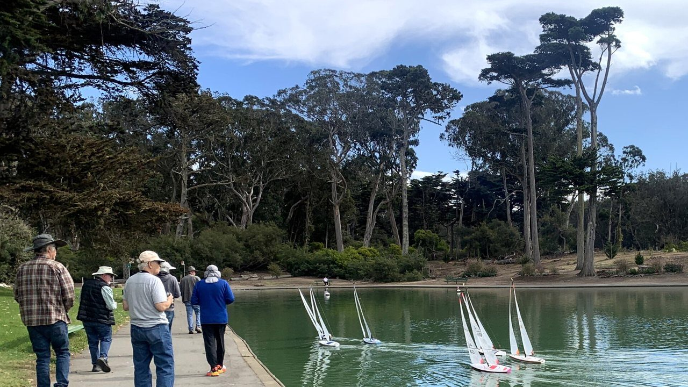

Race, Golden Gate Park

Behind
Best +0:01
371W
Target 418 W-47 W
- Cadence
- 87rpm
- Heart
- 140bpm
- Speed
- 26.5km/h
Work8 of 17
0:26
Next: · 1:00 at level 11
-1.0%
15 m climbed
3.04 km
24
Resistance / 32
Solo races your best-time ghost: position reads Ahead or Behind, and solo alone gets a Pause button. Frozen at 7:16.